8 Differential methylation in EB day 6
8.2 Extract data
df <- {
df_wt <- tracks_key %>% filter(day == "d6") %>% filter(line == "wt")
df_ko3a <- tracks_key %>% filter(day == "d6") %>% filter(line == "ko3a")
df_ko3b <- tracks_key %>% filter(day == "d6") %>% filter(line == "ko3b")
df_ab_bulk <- extract_meth_annot(c(
df_wt$track_name,
df_ko3a$track_name,
df_ko3b$track_name,
"Zhang_Nature_Genetics_2017.Ect_mCG",
"Zhang_Nature_Genetics_2017.Mes_mCG",
"Zhang_Nature_Genetics_2017.End_mCG"), names = c(df_wt$name, df_ko3a$name, df_ko3b$name, "ecto", "meso", "endo"), d_expand = 250, extract_meth_calls = TRUE)
df <- df_ab_bulk %>% select(chrom, start, end, d_exon:gc_cont, ecto, ecto.cov, meso, meso.cov, endo, endo.cov)
df$wt.meth <- rowSums(df_ab_bulk[, paste0(df_wt$name, ".meth")], na.rm=TRUE)
df$wt.cov <- rowSums(df_ab_bulk[, paste0(df_wt$name, ".cov")], na.rm=TRUE)
df$ko3a.meth <- rowSums(df_ab_bulk[, paste0(df_ko3a$name, ".meth")], na.rm=TRUE)
df$ko3a.cov <- rowSums(df_ab_bulk[, paste0(df_ko3a$name, ".cov")], na.rm=TRUE)
df$ko3b.meth <- rowSums(df_ab_bulk[, paste0(df_ko3b$name, ".meth")], na.rm=TRUE)
df$ko3b.cov <- rowSums(df_ab_bulk[, paste0(df_ko3b$name, ".cov")], na.rm=TRUE)
df$ko3a <- df$ko3a.meth / df$ko3a.cov
df$wt <- df$wt.meth / df$wt.cov
df$ko3b <- df$ko3b.meth / df$ko3b.cov
df
} %cache_df% here("output/ab_diff_d6_bulk.tsv") %>% as_tibble()We take only regions that are well covered and add a diff column with 3a(-/-) - 3b(-/-)
min_cov <- 50
df_diff <- {
df_diff <- df %>% filter(ko3a.cov >= min_cov, ko3b.cov >= min_cov, wt.cov >= min_cov) %>% mutate(diff = ko3a - ko3b)
df_diff <- df_diff %>% gintervals.neighbors1("intervs.global.tss") %>% select(chrom:diff, geneSymbol, dist)
df_diff
} %cache_df% here("output/ab_diff_d6_bulk_diff.tsv") %>% as_tibble()## [1] 9130435 298.3 Plot global differences
## [1] 0.14142148.3.1 Figure 7D
options(repr.plot.width = 7, repr.plot.height = 7)
shades <- colorRampPalette(c("white","lightblue", "blue", "darkblue", "yellow", "gold","orange","red", "darkred" ))
smoothScatter(df_diff$ko3a, df_diff$ko3b, colramp = shades, xlab = "3A (-/-)", ylab = "3B (-/-)")
abline(a = 0.25, b = 1, lty = 3, lwd = 3, col="red")
abline(a = -0.25, b = 1, lty = 3, lwd = 3, col="red")
title(glue("{scales::comma(nrow(df_diff))} CpGs"))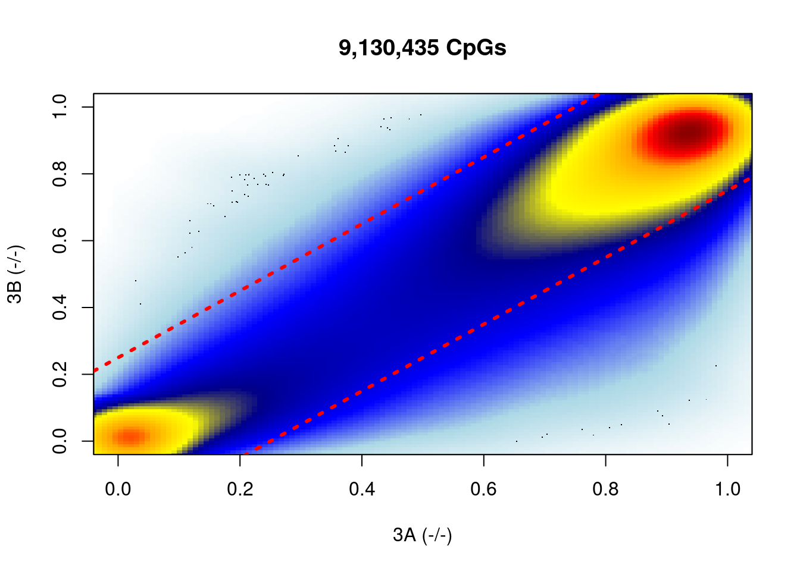
Focusing only on promoters:
df_diff_prom <- df_diff %>%
gintervals.neighbors1(get_promoters()) %>%
filter(dist1 == 0) %>%
select(-(chrom1:dist1)) %cache_df% here("output/ab_diff_d6_bulk_diff_promoters.tsv") %>% as_tibble()options(repr.plot.width = 7, repr.plot.height = 7)
shades <- colorRampPalette(c("white","lightblue", "blue", "darkblue", "yellow", "gold","orange","red", "darkred" ))
smoothScatter(df_diff_prom$ko3a, df_diff_prom$ko3b, colramp = shades, xlab = "3A (-/-)", ylab = "3B (-/-)")
abline(a = 0.25, b = 1, lty = 3, lwd = 3, col="red")
abline(a = -0.25, b = 1, lty = 3, lwd = 3, col="red")
title(glue("{scales::comma(nrow(df_diff_prom))} promoters"))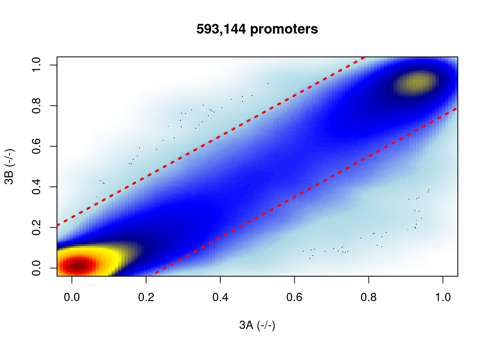
## [1] 1698.4 Extract DNMT3A targets
We extract regions with differences that are below -0.3 (places where 3a(-/-) - 3b(-/-) <= -0.3 (upper left part of the scatter).
These are places where 3a(-/-) is less methylated, i.e. putative targets of DNMT3A.
regs <- df_diff %>%
filter(diff <= -0.3) %>%
mutate(start = start - 250, end = end + 250) %>%
gintervals.canonic() %>%
gextract(c("d_exon", "d_tss", "tor", "ab_score", "cg_cont", "gc_cont"), intervals=., iterator=.) %>%
gintervals.neighbors1("intervs.global.tss") %>%
select(chrom:gc_cont, geneSymbol, dist) %cache_df%
here("output/ab_eb_d6_ko3b_hyper.tsv") %>%
as_tibble()## [1] 1525 11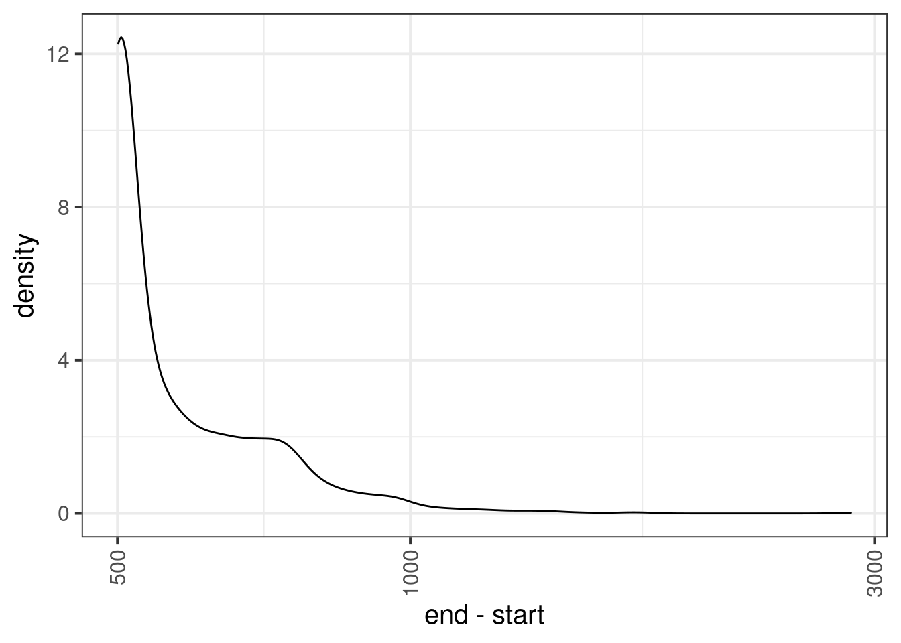
sup_table <- {
df_wt <- tracks_key %>% filter(day == "d6") %>% filter(line == "wt")
df_ko3a <- tracks_key %>% filter(day == "d6") %>% filter(line == "ko3a")
df_ko3b <- tracks_key %>% filter(day == "d6") %>% filter(line == "ko3b")
df_ab_bulk <- extract_meth_annot(c(
df_wt$track_name,
df_ko3a$track_name,
df_ko3b$track_name,
"Zhang_Nature_Genetics_2017.Ect_mCG",
"Zhang_Nature_Genetics_2017.Mes_mCG",
"Zhang_Nature_Genetics_2017.End_mCG"), names = c(df_wt$name, df_ko3a$name, df_ko3b$name, "ecto", "meso", "endo"), d_expand = 250, extract_meth_calls = TRUE, intervals = regs, iterator=regs)
df <- df_ab_bulk %>% select(chrom, start, end, d_exon:gc_cont, ecto, ecto.cov, meso, meso.cov, endo, endo.cov)
df$wt.meth <- rowSums(df_ab_bulk[, paste0(df_wt$name, ".meth")], na.rm=TRUE)
df$wt.cov <- rowSums(df_ab_bulk[, paste0(df_wt$name, ".cov")], na.rm=TRUE)
df$ko3a.meth <- rowSums(df_ab_bulk[, paste0(df_ko3a$name, ".meth")], na.rm=TRUE)
df$ko3a.cov <- rowSums(df_ab_bulk[, paste0(df_ko3a$name, ".cov")], na.rm=TRUE)
df$ko3b.meth <- rowSums(df_ab_bulk[, paste0(df_ko3b$name, ".meth")], na.rm=TRUE)
df$ko3b.cov <- rowSums(df_ab_bulk[, paste0(df_ko3b$name, ".cov")], na.rm=TRUE)
df$ko3a <- df$ko3a.meth / df$ko3a.cov
df$wt <- df$wt.meth / df$wt.cov
df$ko3b <- df$ko3b.meth / df$ko3b.cov
df
}
head(sup_table)## # A tibble: 6 x 26
## chrom start end d_exon d_tss tor ab_score a_score
## 1 chr1 12856026 12856579 328 23572 1.3366647 -0.4332772 -0.4043494
## 2 chr1 13117554 13118055 -560 -560 0.6330189 -0.4057871 -0.3534880
## 3 chr1 13524846 13525376 29671 54833 0.8855244 -0.5009643 -0.4720550
## 4 chr1 14495784 14496427 -195825 -195825 -0.8437675 -0.4262571 -0.3651721
## 5 chr1 14497465 14498563 -197734 -197734 -0.8437675 -0.4453787 -0.3654922
## 6 chr1 14907781 14908427 701 838 -0.9435036 -0.3355332 -0.2938322
## b_score cg_cont gc_cont ecto ecto.cov meso meso.cov
## 1 0.04263026 0.01212121 0.4500000 0.52976190 168 0.34482759 145
## 2 0.04959648 0.02231405 0.4995041 0.14791667 480 0.11333333 300
## 3 0.06331065 0.02303030 0.4686364 0.81167109 377 0.82283465 254
## 4 0.05616216 0.02012987 0.4293507 0.02386635 419 0.01745636 401
## 5 0.06639115 0.01604743 0.4779448 0.01891892 370 0.03412969 293
## 6 0.05721129 0.01545454 0.4189610 0.25698324 179 0.36666667 150
## endo endo.cov wt.meth wt.cov ko3a.meth ko3a.cov ko3b.meth ko3b.cov
## 1 0.2699387 163 355 450 69 130 72 98
## 2 0.3497110 346 474 1109 82 288 123 304
## 3 0.5284810 316 702 791 188 246 201 214
## 4 0.1633238 349 308 888 61 298 114 320
## 5 0.2029703 404 745 1089 108 282 221 359
## 6 0.4080000 125 343 440 76 138 83 113
## ko3a wt ko3b
## 1 0.5307692 0.7888889 0.7346939
## 2 0.2847222 0.4274121 0.4046053
## 3 0.7642276 0.8874842 0.9392523
## 4 0.2046980 0.3468468 0.3562500
## 5 0.3829787 0.6841139 0.6155989
## 6 0.5507246 0.7795455 0.7345133sup_table %>%
select(chrom:end, ko3a, ko3a.cov, ko3b, ko3b.cov, wt, wt.cov, ab_score, `CG content`=cg_cont, `GC content`=gc_cont) %>%
inner_join(regs %>% select(chrom:end, geneSymbol, `distance to gene`=dist)) %>%
writexl::write_xlsx(path = here("output/S3 - DNMT3A DMRs.xlsx")) ## Joining, by = c("chrom", "start", "end")8.5 Plot distribution of AB score on the differential regions
all_intervs <- df_diff %>% mutate(start = start - 250, end = end + 250) %>% select(chrom, start, end) %>% as.data.frame() %>% gintervals.force_range() %>% gintervals.canonic() %>% gextract(c("d_exon", "d_tss", "tor", "ab_score", "cg_cont", "gc_cont"), intervals=., iterator=.)## 40%...77%...100%8.5.1 Figure 7E
p_ab_score_regs <- bind_rows(all_intervs %>% mutate(type = 'Bg.'), regs %>% mutate(type = 'Diff')) %>% ggplot(aes(x=ab_score, color=type)) + geom_density() + scale_color_manual(name = '', values = c("Bg." = "gray", "Diff" = "red"))
p_ab_score_regs + theme_bw()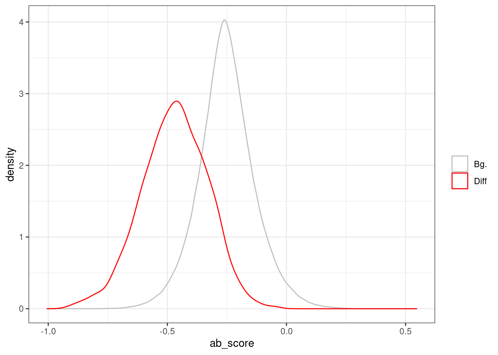
all_intervs_prom <- df_diff_prom %>% mutate(start = start - 250, end = end + 250) %>% select(chrom, start, end) %>% as.data.frame() %>% gintervals.force_range() %>% gintervals.canonic() %>% gextract(c("d_exon", "d_tss", "tor", "ab_score", "cg_cont", "gc_cont"), intervals=., iterator=.)p_ab_score_regs_prom <- df_diff_prom %>%
mutate(type = case_when(diff <= -0.3 ~ "3a", diff >= 0.3 ~ "3b", TRUE ~ "Bg.")) %>%
ggplot(aes(x=ab_score, color=type)) + geom_density() + scale_color_manual(name = '', values = c("Bg." = "gray", "3a" = "purple", "3b" = "orange"))
p_ab_score_regs_prom + theme_bw()
8.6 Plot examples
8.6.1 Figure 7G, Extended Data Figure 10
example_genes <- c("Msx1", "Cyp26a1", "Foxa2", "Krt18", "Sox2", "Sp5", "Zfpm1")
plot_example <- function(gene, ...){
print(gene)
x <- regs %>% filter(geneSymbol == gene) %>% slice(1)
genome_res <- max(1e4, abs(x$d_tss) + 0.2 * abs(x$d_tss))
plot_res <- 1e3
d_expand <- 250
med_ab_score = gquantiles("DNMT.ab_score")
p <- plot_ab_diff_cis_example(x, c("mEBDNMT.comb.d6_wt", "mEBDNMT.comb.d6_ko3a", "mEBDNMT.comb.d6_ko3b"), names = c("wt", "ko3a", "ko3b"), colors = c("wt" = "black", "ko3a" = "purple", "ko3b" = "orange"), trend_track = "mEBDNMT.comb.d6_wt", trend_res = 500, genome_res = genome_res, plot_res = plot_res, d_expand = d_expand, add_legend = FALSE, med_ab_score= med_ab_score)
print(p)
}
walk(example_genes, plot_example)## [1] "Msx1"## Warning: Removed 1 row(s) containing missing values (geom_path).## Warning: Removed 1 rows containing missing values (geom_rect).## Warning: Removed 14 rows containing missing values (geom_point).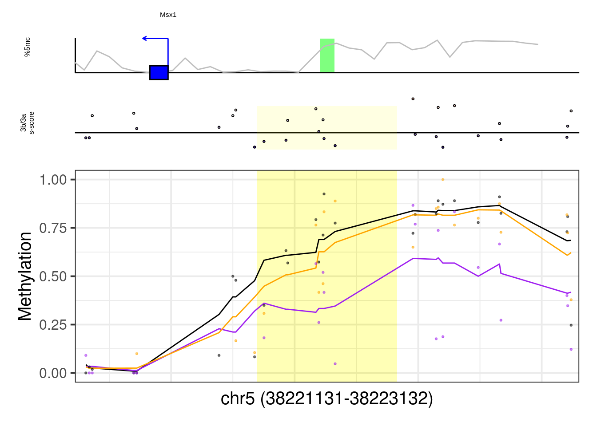
## [1] "Cyp26a1"## Warning: Removed 75 rows containing missing values (geom_point).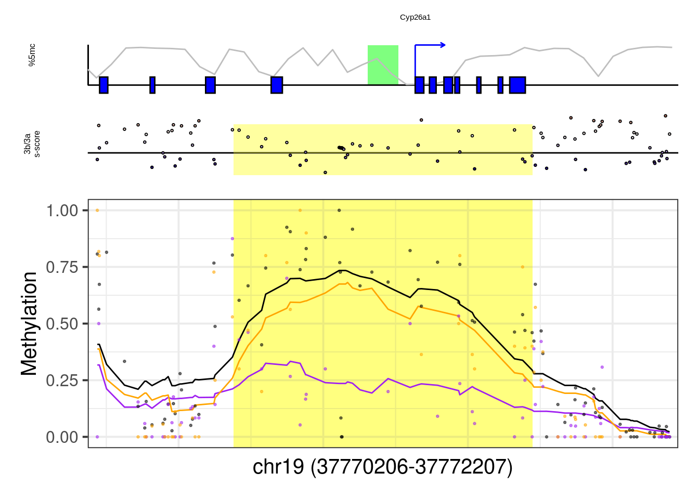
## [1] "Foxa2"## Warning: Removed 1 row(s) containing missing values (geom_path).## Warning: Removed 29 rows containing missing values (geom_point).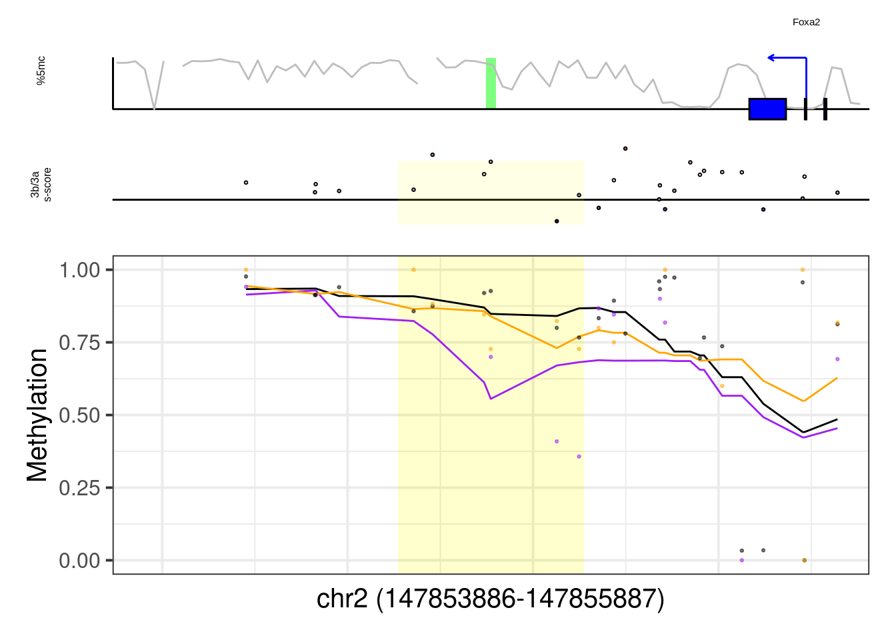
## [1] "Krt18"## Warning: Removed 1 row(s) containing missing values (geom_path).## Warning: Removed 9 rows containing missing values (geom_point).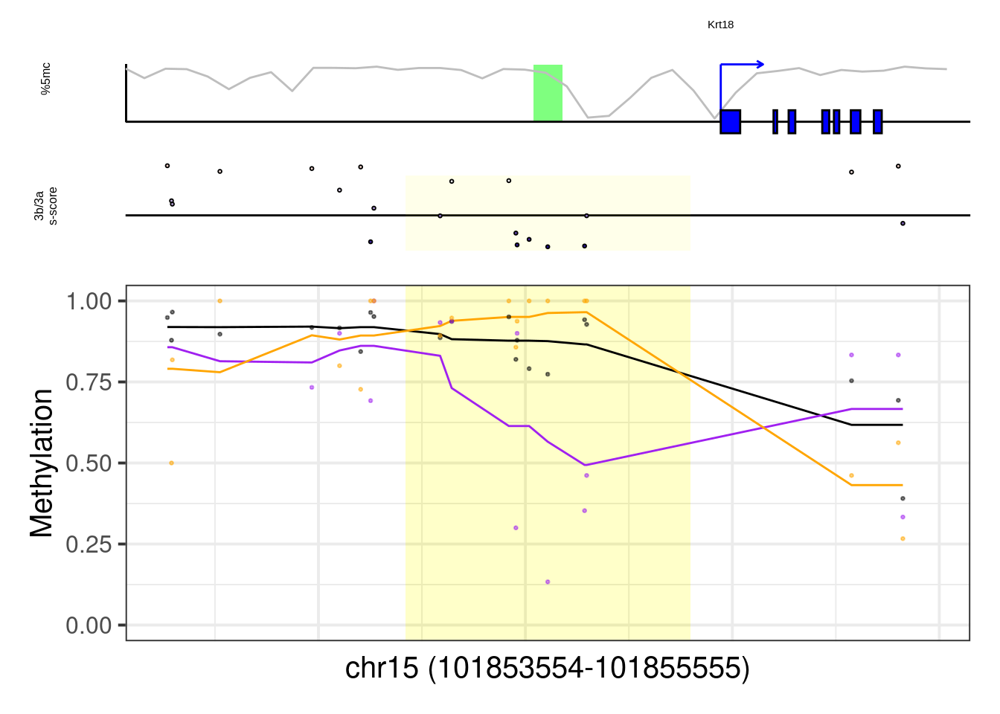
## [1] "Sox2"## Warning: Removed 1 row(s) containing missing values (geom_path).## Warning: Removed 1 rows containing missing values (geom_rect).## Warning: Removed 68 rows containing missing values (geom_point).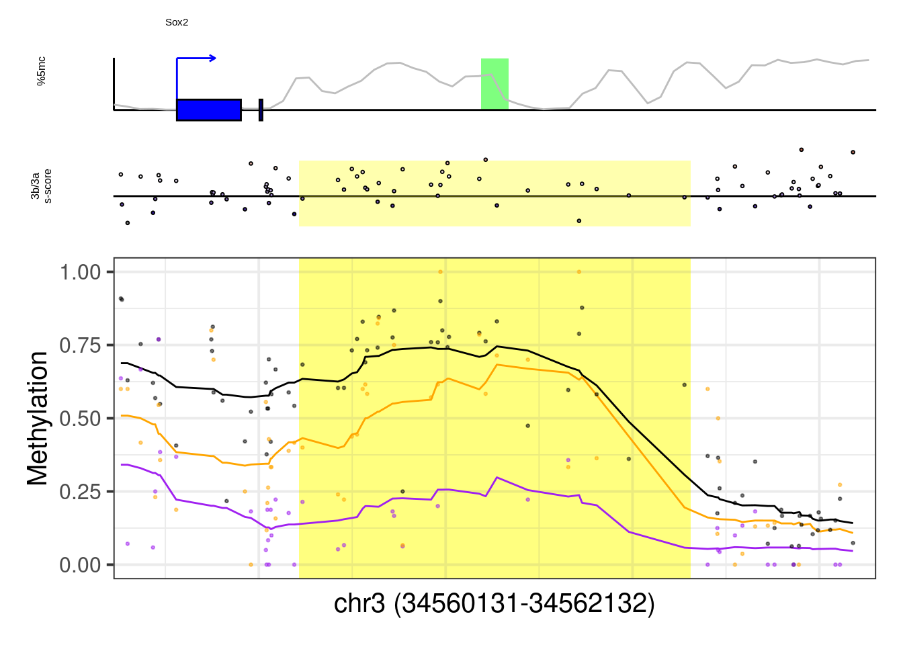
## [1] "Sp5"## Warning: Removed 1 row(s) containing missing values (geom_path).## Warning: Removed 15 rows containing missing values (geom_point).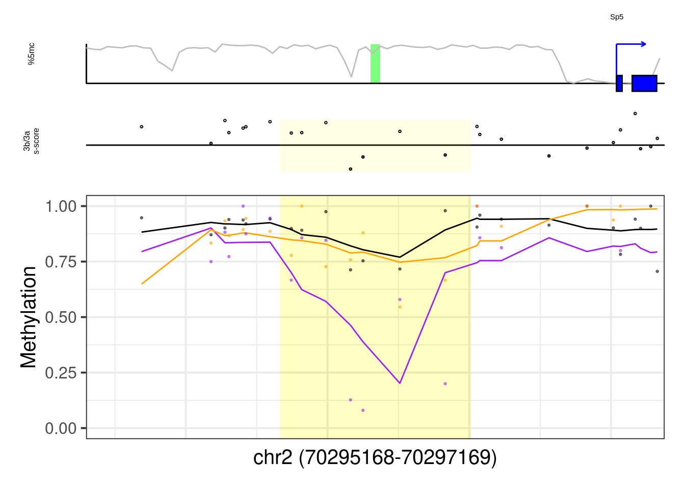
## [1] "Zfpm1"## Warning: Removed 1 row(s) containing missing values (geom_path).## Warning: Removed 7 rows containing missing values (geom_point).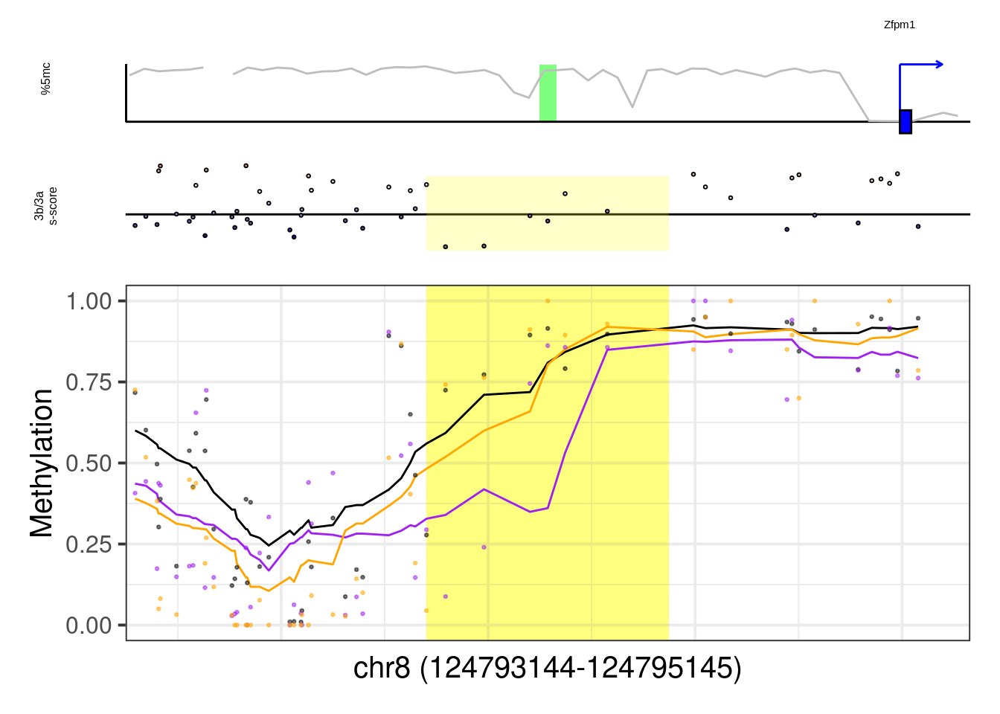
example_cands <- c( "T",
"Eomes",
"Gsc",
"Pou3f1",
"Pou5f1",
"Sall4",
"Lyl1")
more_examples <- example_cands[example_cands %in% regs$geneSymbol]
more_examples## [1] "Eomes" "Gsc" "Pou3f1" "Pou5f1" "Sall4" "Lyl1"## [1] "Eomes"## Warning: Removed 1 row(s) containing missing values (geom_path).## Warning: Removed 8 rows containing missing values (geom_point).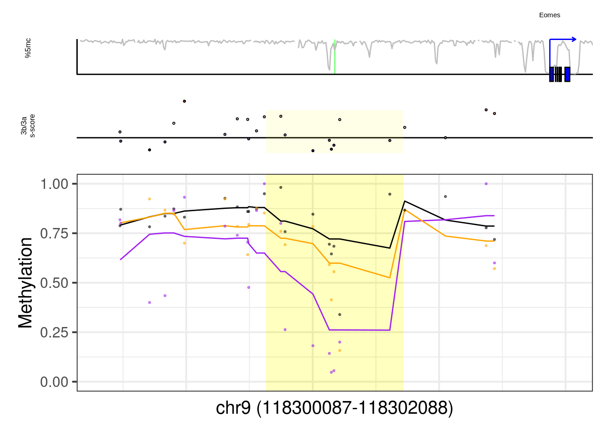
## [1] "Gsc"## Warning: Removed 2 row(s) containing missing values (geom_path).## Warning: Removed 20 rows containing missing values (geom_point).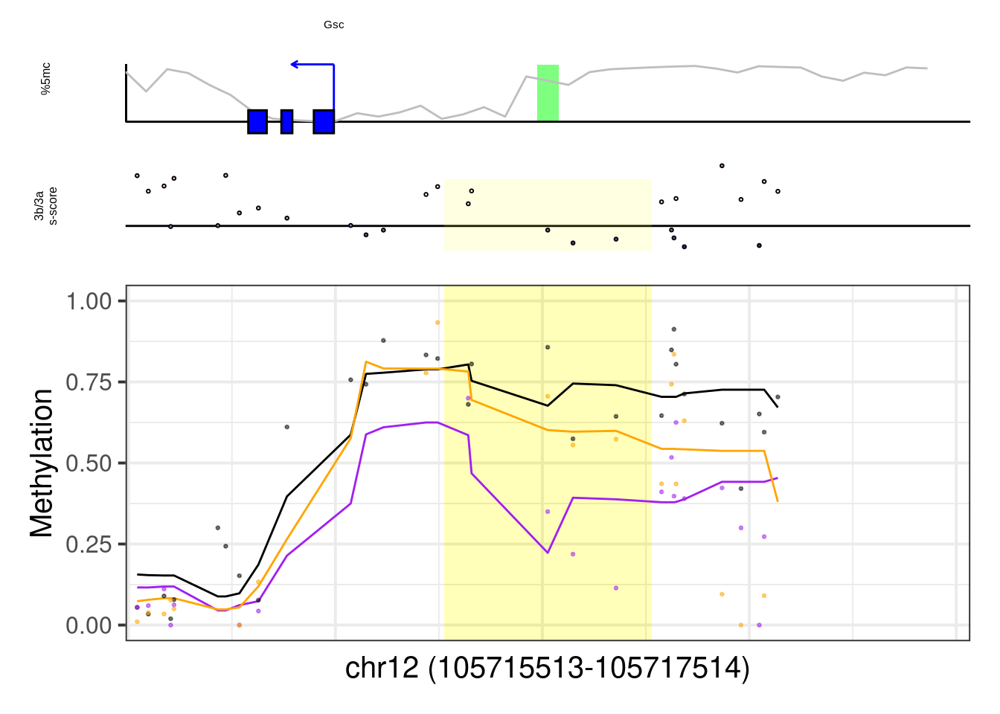
## [1] "Pou3f1"## Warning: Removed 1 row(s) containing missing values (geom_path).## Warning: Removed 29 rows containing missing values (geom_point).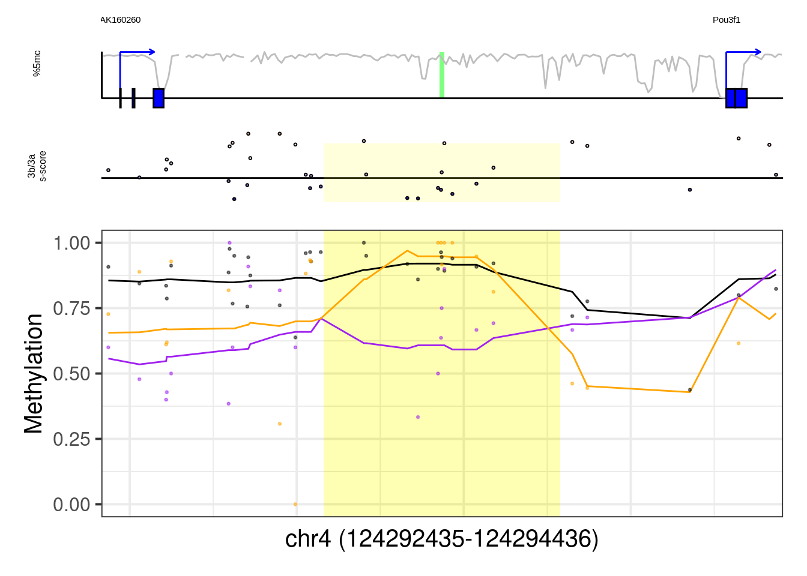
## [1] "Pou5f1"## Warning: Removed 2 row(s) containing missing values (geom_path).## Warning: Removed 1 rows containing missing values (geom_rect).## Warning: Removed 5 rows containing missing values (geom_point).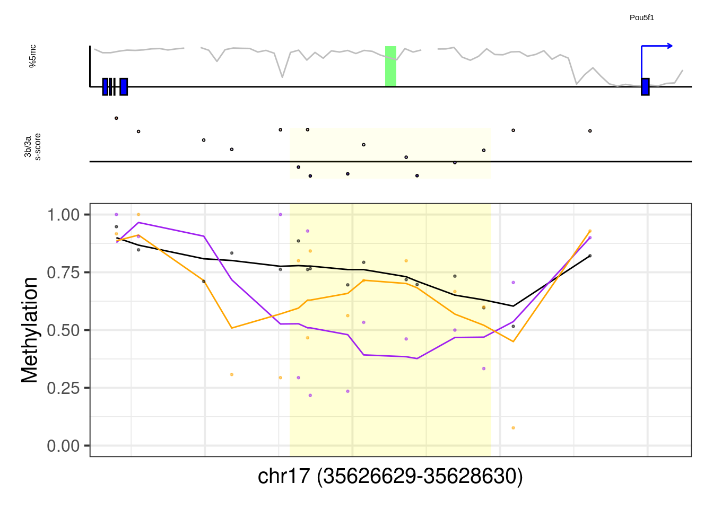
## [1] "Sall4"## Warning: Removed 1 row(s) containing missing values (geom_path).## Warning: Removed 28 rows containing missing values (geom_point).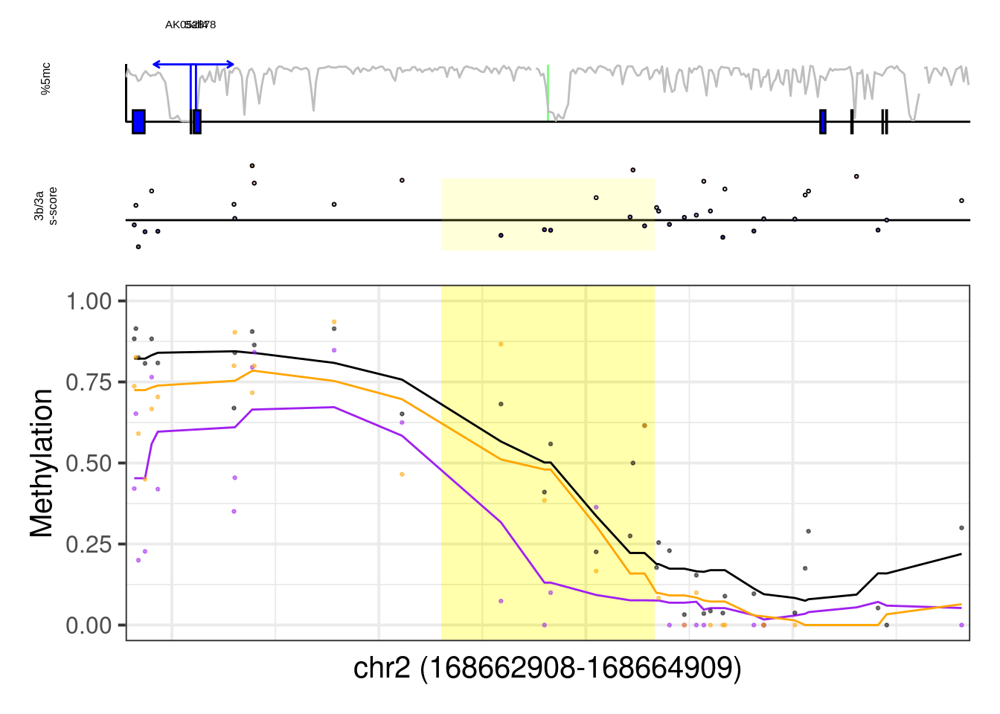
## [1] "Lyl1"## Warning: Removed 9 rows containing missing values (geom_point).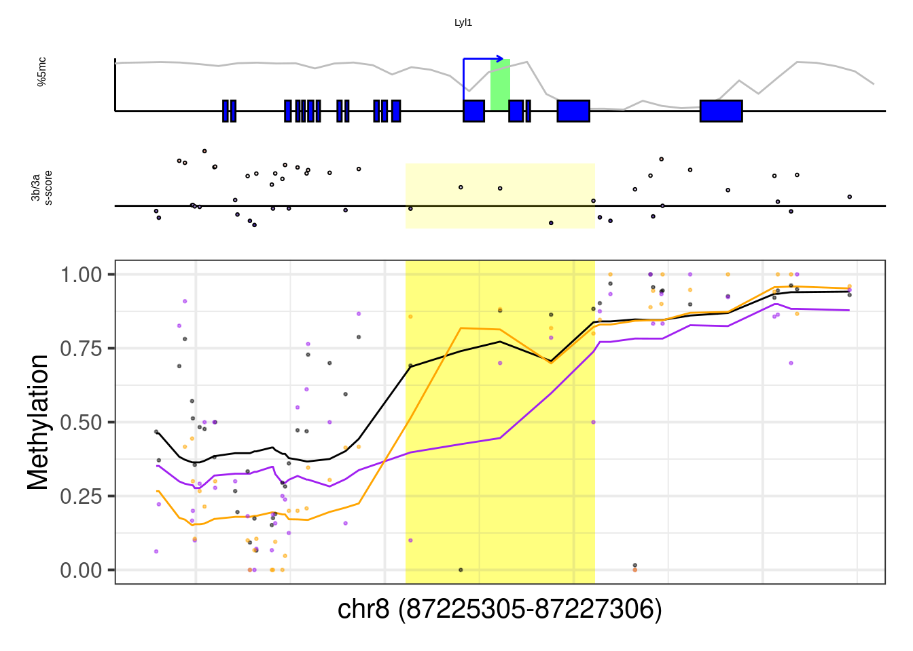
8.7 Test regions enrichment vs gene expression
germ_genes <- fread_rownames(here("data/germ_genes.txt"), row.var = "geneSymbol") %>% arrange(desc(x) ) %>% slice(1:250) %>% as_tibble()
nrow(germ_genes)## [1] 250germ_genes <- germ_genes %>% separate_rows(geneSymbol, sep=";") %>% left_join(gintervals.load("intervs.global.tss")) %>% select(chrom, start, end, strand, geneSymbol, x) %>% as_tibble() %>% filter(!is.na(chrom)) %>% distinct(geneSymbol, .keep_all=TRUE)## Joining, by = "geneSymbol"## [1] 267gastru_genes <- fread_rownames(here("data/gastru_genes.txt"), row.var = "geneSymbol") %>% as_tibble()
nrow(gastru_genes)## [1] 1743gastru_genes <- gastru_genes %>% separate_rows(geneSymbol, sep=";") %>% left_join(gintervals.load("intervs.global.tss")) %>% select(chrom, start, end, strand, geneSymbol, x) %>% as_tibble() %>% filter(!is.na(chrom)) %>% distinct(geneSymbol, .keep_all=TRUE)## Joining, by = "geneSymbol"## [1] 1878diff = ko3a - ko3b.
diff > 0 => hypo in ko3b => places that 3b methylates.
diff < 0 => hypo in ko3a => places that 3a methylates.
diff_thresh <- 0.3
regs_3a_intervs <- df_diff %>% filter(diff >= diff_thresh) %>% mutate(start = start - 250, end = end + 250) %>%
as.data.frame() %>%
gintervals.canonic() %>%
mutate(type = "3b")
regs_3b_intervs <- df_diff %>% filter(diff <= -diff_thresh) %>% mutate(start = start - 250, end = end + 250) %>%
as.data.frame() %>%
gintervals.canonic() %>%
mutate(type = "3a")
regs_no_diff_intervs <- df_diff %>% filter(abs(diff) < diff_thresh) %>% mutate(start = start - 250, end = end + 250) %>%
as.data.frame() %>%
gintervals.force_range() %>%
gintervals.canonic() %>%
mutate(type = "bg")## 22%...54%...81%...100%df_germ <- bind_rows(regs_3a_intervs, regs_3b_intervs, regs_no_diff_intervs) %>% select(chrom, start, end, type) %>% gintervals.neighbors1(germ_genes)
df_gastru <- bind_rows(regs_3a_intervs, regs_3b_intervs, regs_no_diff_intervs) %>% select(chrom, start, end, type) %>% gintervals.neighbors1(germ_genes)## # A tibble: 3 x 2
## type n
## 1 3a 1526
## 2 3b 14409
## 3 bg 5192578.7.1 Figure 7F
p <- df_germ %>% ggplot(aes(x=abs(dist), color=type)) + stat_ecdf(size=0.5) + scale_color_manual(name = "", values = c("bg" = "darkblue", "3a" = "purple", "3b" = "orange")) + xlab("Distance to gene (bp)") + scale_x_log10(labels = c("0", "1k", "10k", "100k", "1M"), breaks = c(0, 1e3, 1e4, 1e5, 1e6)) + coord_cartesian(xlim = c(1e3,1e6), ylim=c(0,0.3)) + ylab("Fraction of regions\nwith distance < x")
p + theme_bw() ## Warning: Transformation introduced infinite values in continuous x-axis## Warning: Removed 335 rows containing non-finite values (stat_ecdf).
## Warning in ks.test.default(abs(df_germ$dist[df_germ$type == "3a"]),
## abs(df_germ$dist[df_germ$type == : p-value will be approximate in the presence
## of ties##
## Asymptotic two-sample Kolmogorov-Smirnov test
##
## data: abs(df_germ$dist[df_germ$type == "3a"]) and abs(df_germ$dist[df_germ$type == "3b"])
## D = 0.052125, p-value = 0.001113
## alternative hypothesis: two-sided## Warning in ks.test.default(abs(df_germ$dist[df_germ$type == "3b"]),
## abs(df_germ$dist[df_germ$type == : p-value will be approximate in the presence
## of ties##
## Asymptotic two-sample Kolmogorov-Smirnov test
##
## data: abs(df_germ$dist[df_germ$type == "3b"]) and abs(df_germ$dist[df_germ$type == "bg"])
## D = 0.062757, p-value < 2.2e-16
## alternative hypothesis: two-sided## Warning in ks.test.default(abs(df_germ$dist[df_germ$type == "3a"]),
## abs(df_germ$dist[df_germ$type == : p-value will be approximate in the presence
## of ties##
## Asymptotic two-sample Kolmogorov-Smirnov test
##
## data: abs(df_germ$dist[df_germ$type == "3a"]) and abs(df_germ$dist[df_germ$type == "bg"])
## D = 0.10252, p-value = 2.631e-14
## alternative hypothesis: two-sidedp <- df_gastru %>% ggplot(aes(x=abs(dist), color=type)) + stat_ecdf(size=0.5) + scale_color_manual(name = "", values = c("bg" = "darkblue", "3a" = "purple", "3b" = "orange")) + xlab("Distance to gene (bp)") + scale_x_log10(labels = c("0", "1k", "10k", "100k", "1M"), breaks = c(0, 1e3, 1e4, 1e5, 1e6)) + coord_cartesian(xlim = c(100,1e6)) + ylab("Fraction of regions\nwith distance < x")
p + theme_bw() ## Warning: Transformation introduced infinite values in continuous x-axis## Warning: Removed 335 rows containing non-finite values (stat_ecdf).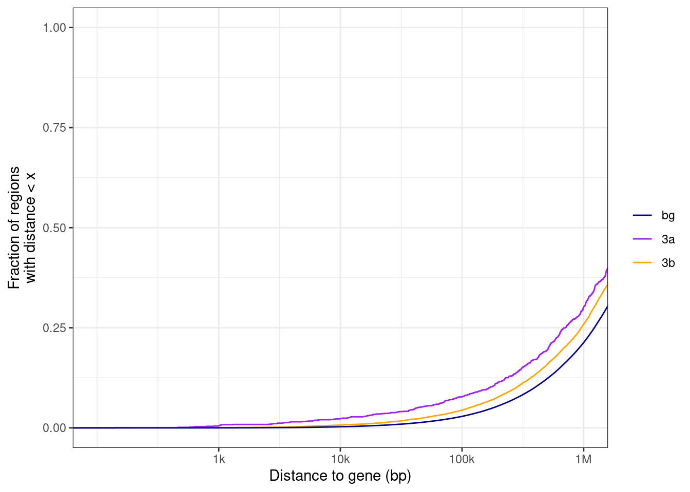
## Warning in ks.test.default(abs(df_gastru$dist[df_gastru$type == "3a"]), : p-
## value will be approximate in the presence of ties##
## Asymptotic two-sample Kolmogorov-Smirnov test
##
## data: abs(df_gastru$dist[df_gastru$type == "3a"]) and abs(df_gastru$dist[df_gastru$type == "3b"])
## D = 0.052125, p-value = 0.001113
## alternative hypothesis: two-sided## Warning in ks.test.default(abs(df_gastru$dist[df_gastru$type == "3b"]), : p-
## value will be approximate in the presence of ties##
## Asymptotic two-sample Kolmogorov-Smirnov test
##
## data: abs(df_gastru$dist[df_gastru$type == "3b"]) and abs(df_gastru$dist[df_gastru$type == "bg"])
## D = 0.062757, p-value < 2.2e-16
## alternative hypothesis: two-sided## Warning in ks.test.default(abs(df_gastru$dist[df_gastru$type == "3a"]), : p-
## value will be approximate in the presence of ties##
## Asymptotic two-sample Kolmogorov-Smirnov test
##
## data: abs(df_gastru$dist[df_gastru$type == "3a"]) and abs(df_gastru$dist[df_gastru$type == "bg"])
## D = 0.10252, p-value = 2.631e-14
## alternative hypothesis: two-sided